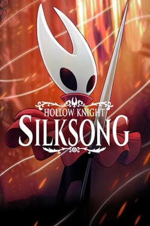
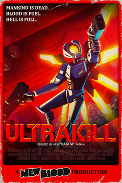
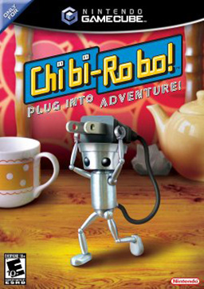
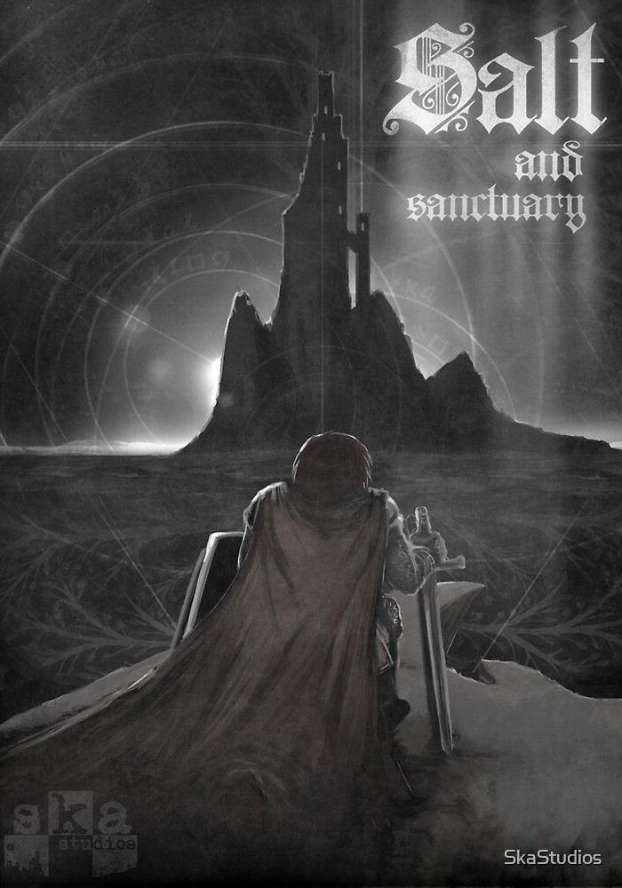

This is a table containing a few of my favorite games. Feel free to reccommend a game using the issue feature. I'll see if I have time and I'll give it a go! I will also try to keep most of the games on this list single player (or games where there is co-op but the single player is also good.)
| Rank | Cover | Title | Score | Thoughts |
| #1 |  | Hollow Knight: Silksong | 9.5/10 | Silksong is one of my most anticipated games of all time, and it was well worth the wait. It takes everything that made its predecessor so good and runs with them, combining skillful platforming with fun and engaging combat. While it can be difficult for first-time gamers, the game provides the player with a multitude of areas to practice fundamentals in a safe environment with low risk, which eliminates skill issues given the player doesn't wuss out. |
| #2 |  | Ultrakill | 9.45/10 | Ultrakill is one of my most played games. The game has a wide range of difficulty settings that allows players of almost any skill level to have fun and experiment with all the unique weapon interactions. The game encourages the player to find their own unique style and express themselves through the way they play with a highly customizable arsenal. Oh, and another thing, the game is still in early access, so expect more from it on the way. |
| #3 |  | Chibi Robo | 9/10 | Chibi Robo is a slower game than the previous two, being a sort of puzzle platformer where you must utilize household objects to collect gifts for your family and clean messes and trash to bring happiness to them. By collecting and cleaning, you can earn money to get further upgrades to make your job easier and reach new areas. This game plays fairly slow, and can feel tedious at times, but I feel the story greatly makes up for this. |
| #4 |  | Salt and Sanctuary | 8.5/10 | Salt and sanctary is if Dark Souls was a 2D platformer, combining stratigic gameplay and a variety of playstyles to allow every playthrough to feel a little bit different. |
| #5 | Portal | 8/10 | yall know what portal is |